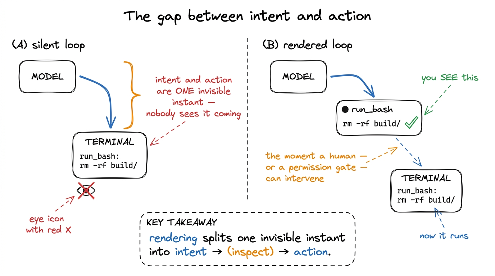
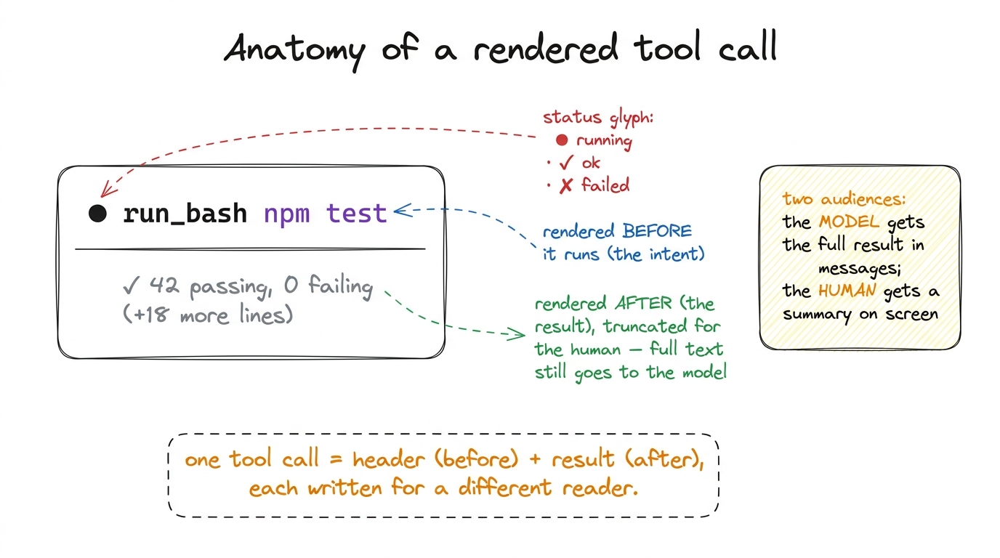
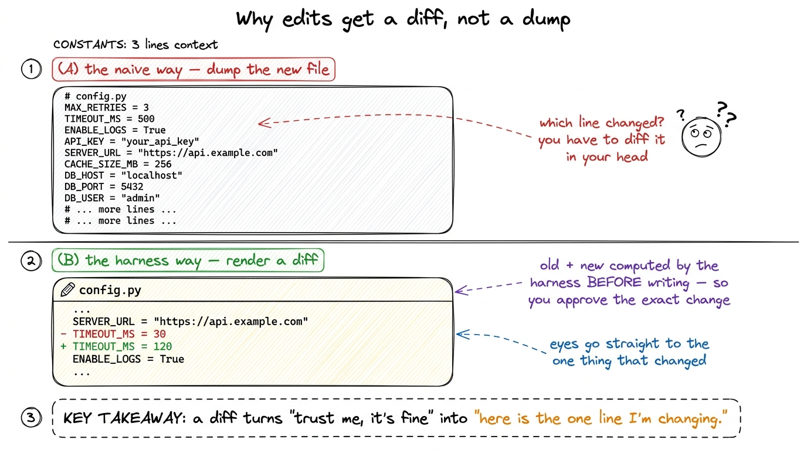
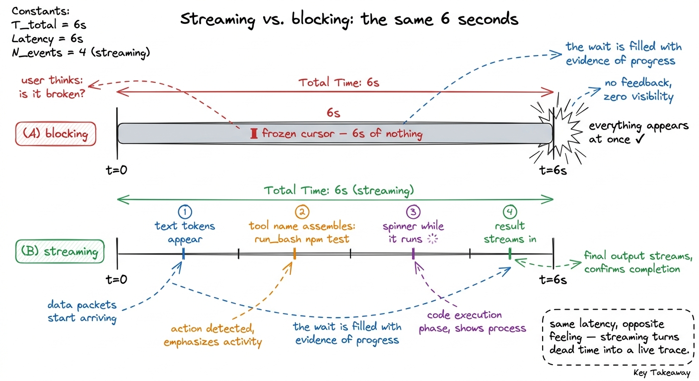

Streaming tool calls to the UI
Here is a small experiment you can run in your head. Take the bare harness from your first bare harness — the forty-line loop that reads files and runs shell commands — and give it a real task: "clean up the imports in this module." Now watch it work. Except you can't watch it, because it doesn't show you anything. It thinks in silence, runs run_bash in silence, edits your file in silence, and eventually prints a paragraph saying it's done. For those ten seconds you are staring at a blinking cursor, trusting a process you cannot see, hoping it didn't just rm something.
That blinking cursor is the problem this chapter solves. A harness that acts on your machine but won't tell you what it's doing is not just unpleasant — it is unsafe. So before we add another capability, we make the loop legible: we render each tool call the moment the model asks for it, show the result the moment it comes back, and render edits as diffs you can read at a glance. Visibility is not polish we bolt on at the end. It is a safety system, and it belongs in Layer 2 next to the permission gates.
Why the silent loop is the dangerous loop
Go back to the loop for a second. In every lap, the model emits a tool_use block — a name and a set of arguments — and then our harness runs it. There is a gap between "the model decided to run rm -rf build" and "the harness actually ran it." In the silent version, that gap is invisible: the decision and the action are fused into one unseen instant. Nobody sees the command until it has already happened.
Everything that makes an agent trustworthy lives in that gap. It is where a human could say "wait, no." It is where a permission prompt interrupts. It is where you, watching, catch the model about to edit the wrong file. Rendering the tool call before it runs is what pries that fused instant back apart into intent and action — and once they're apart, you can inspect the intent before the action ever happens.1 This is exactly why permissions and rendering are the same subsystem in practice. A permission prompt is just a rendered tool call that pauses for a keystroke. Build the rendering first and the approval gate is almost free — it's the same box with a "y/n?" at the bottom.

figure rendering · Rendering a tool call before it runs splits the fused instant of "deciThere is a subtler failure too. When the loop is silent and something goes wrong — the model gets stuck re-reading the same file, or a command hangs — you have no idea where it is. A visible loop is a debuggable loop. Every tool call rendered to the screen is a log line you didn't have to write, a breadcrumb trail through the agent's reasoning that you can read in real time.
The shape of what we render
So what, exactly, do we put on the screen? For every tool call, there are two moments and therefore two things to render.
The first moment is when the model asks. We have a tool_use block: a name (read_file, run_bash, edit_file) and an input dict of arguments. We render this immediately, before running anything — a header line that says, in plain language, "I am about to do X." The second moment is when the tool returns. Now we have a result — a file's contents, a command's stdout, an error — and we render that underneath, usually collapsed or truncated, because the model needs the full result but the human only needs the gist.

figure rendering · Every rendered tool call has two parts written for two readers: a headThat last point is the one people miss. The model and the human are two different audiences reading two different things. The model needs the complete, untruncated tool result appended to messages so it can reason correctly — that's the context engine's job. The human needs a glanceable summary on screen. These are separate channels, and conflating them is why so many homemade agents either flood your terminal with 4,000 lines of stdout or hide so much you can't tell what happened. Render for the human; feed the model separately.
Wiring it into the loop
Here is the bare loop again, now with rendering woven in. The changes are small — two render calls — but they change the entire feel of the agent.
def run_agent(user_request):
messages = [{"role": "user", "content": user_request}]
while True:
reply = call_model(messages, TOOLS)
messages.append({"role": "assistant", "content": reply.content})
# render any plain text the model produced this turn
for block in reply.content:
if block.type == "text":
render_assistant_text(block.text)
if reply.stop_reason != "tool_use":
return
tool_results = []
for block in reply.content:
if block.type == "tool_use":
render_tool_call(block.name, block.input) # ← BEFORE running: the intent
out = run_tool(block.name, block.input)
render_tool_result(block.name, out) # ← AFTER running: the result
tool_results.append({
"type": "tool_result",
"tool_use_id": block.id,
"content": str(out), # full result → model
})
messages.append({"role": "user", "content": tool_results})And the renderers themselves are almost embarrassingly simple. The discipline is in what they show, not how clever they are:
GLYPH = {"read_file": "◇", "run_bash": "●", "edit_file": "✎"}
def render_tool_call(name, args):
# a one-line, human-readable summary of the INTENT
summary = summarize_args(name, args) # e.g. run_bash → the cmd string
print(f"\n{GLYPH.get(name, '•')} {bold(name)} {dim(summary)}")
def render_tool_result(name, out):
text = str(out)
lines = text.splitlines()
shown = "\n".join(lines[:6]) # human sees the gist…
print(indent(dim(shown)))
if len(lines) > 6:
print(indent(dim(f"… (+{len(lines) - 6} more lines)")))Run the same "clean up the imports" task now and the experience is transformed. You see ◇ read_file imports.py, then the first few lines of the file, then ✎ edit_file imports.py, then a diff, then ● run_bash python -c "import imports" returning cleanly. Three laps of the loop, each one narrated as it happens. You didn't add any capability — the agent does exactly what it did before — but now you trust it, because you can see it.2 This is precisely the texture of Claude Code and pi in the terminal: a stream of little status lines, each a tool call with its glyph, name, and a one-line argument summary, results folded away unless you ask. The rendering is deliberately low-drama so the content stands out — a red diff line pops because everything around it is calm grey.
The special case that earns its own renderer: edits
Most tool results are fine as truncated text. File edits are not. When the model rewrites a file, "here is the new content" is almost useless to a human — you can't hold the old version in your head and spot the difference. What you need is a diff: the old and new side by side, additions in green, deletions in red, unchanged context in grey. The diff is the single highest-leverage piece of rendering in the whole harness, because edits are the actions with the most consequence and the least reversibility.

figure rendering · Dumping the new file forces the human to diff it mentally; rendering aCrucially, a good harness computes the diff before it writes the file, from the old contents and the model's proposed new contents. That ordering is what makes the diff double as an approval surface: the human sees exactly the change that is about to land and can say yes or no to that specific edit.3 Which is why real edit_file tools take an old-string / new-string pair rather than a whole file — see tool schemas as contracts. A targeted replacement means the diff is small, unambiguous, and easy to approve, instead of a wall of "the whole file, but different." Here is a minimal edit renderer built on Python's own difflib:
import difflib
def render_edit(path, old, new):
print(f"\n✎ {bold(path)}")
diff = difflib.unified_diff(
old.splitlines(), new.splitlines(),
lineterm="", n=2, # 2 lines of surrounding context
)
for line in diff:
if line.startswith("+") and not line.startswith("+++"):
print(green(line)) # additions
elif line.startswith("-") and not line.startswith("---"):
print(red(line)) # deletions
elif line.startswith("@@"):
print(dim(line)) # hunk header, muted
else:
print(dim(line)) # unchanged context, mutedEverything muted, only the +/- lines in color: the design goal is that your eye lands on the change and nothing else. This is the same instinct behind Claude Code's edit view and pi's diff rendering — the surrounding code is scaffolding, the two colored lines are the message.
Streaming, so the wait feels alive
There is one more layer of visibility, and it's about time. Everything above renders a tool call the instant the model asks for it — but the model itself takes seconds to produce that request, and a long-running run_bash takes seconds to return. If the screen freezes during those seconds, you're back to the blinking cursor, unsure if the thing is working or hung.
So real harnesses stream. The model API can emit its response incrementally — text tokens as they're generated, and the tool name and arguments as they assemble — and the harness renders them live. You watch the assistant's sentence type itself out; you watch run_bash npm instal… complete into npm install character by character. And while a tool actually runs, you show a spinner or a live tail of its output, so a thirty-second test suite feels like progress instead of a freeze.

figure rendering · The wall-clock time is identical; streaming just fills it with visibleStreaming doesn't make the agent faster — the model and the tools take exactly as long either way. It makes the agent feel accountable, and it lets you hit interrupt the moment you see it heading somewhere wrong, instead of after the damage is done. That interrupt path ties directly back to stop conditions: a visible, streaming loop is one you can actually stop.
What this buys you, and what's still missing
With two render calls, a diff renderer, and streaming, the harness has crossed a line that has nothing to do with capability and everything to do with trust. The agent does precisely what the silent version did — same loop, same tools, same results in messages — but now every action is announced before it happens, every result is legible after, every edit is a reviewable diff, and every wait is filled with visible progress. You have turned an opaque process into a glass box.
What's still missing is the decision. Right now we render the tool call and then run it anyway — the human is a spectator, not a gatekeeper. We've built the window; we haven't built the lock. The rendered header is exactly the surface a permission prompt hangs off, so that is the natural next step: pausing on the consequential calls and waiting for a yes. We build that gate — and the approval modes that decide which calls even need one — in permission gates and approval modes. Visibility was the prerequisite. Control comes next.